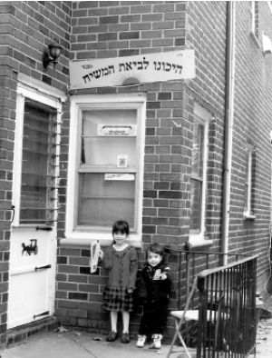

The Power of a Sukka
In every Jewish neighborhood there are sukkos galore, but in Canarsie, I sat in one of the only sukkos in the area .
R’ Boruch Hertzl Borochov, director of the Merkaz Igros Kodesh in Rechovos, relates:
Before we moved to Eretz Yisroel, we lived for many years in the Canarsie neighborhood of Brooklyn. I know that we looked odd to the Jewish neighbors who lived on our street. Most of them were intermarried, and after decades of estrangement, there was a Jew dressed in Chassidic clothing walking down their street. On Shabbos, he even wore a tallis with tzitzis as he walked to the Chabad house.
In addition, we had a “Hichonu L’Bee’as HaMoshiach” sign over our front door, a mitzva tank with a sign, “Hinei, hinei Moshiach ba” on it, and a picture of the Rebbe next to a loudspeaker which played Chassidic and Moshiach songs. So it was not surprising that we stood out in the neighborhood.
Our presence definitely annoyed certain people, probably because we reminded them of things they wanted to forget. For example, I remember one neighbor, a man of about 75, who would make a dismissive motion with his hand every time he saw me with the tank. And there were other similar behaviors.
AN ODD JEW WITH AN ODD REQUEST
Sukkos was approaching. For a long time I had been wondering how I could build a sukka in the yard of the building we lived in. In the United States, in neighborhoods that are not Jewish, sukka building is harder to do than in overtly Jewish neighborhoods. I looked into various options but none of them seemed feasible. I finally decided to ask permission of my landlord and from the owner of the house next door, whether I could build a sukka from wall to wall, i.e. from the wall of our house to the wall of the neighbor’s house. That would give me a spacious sukka.
I did not know how they would react to my request. After long conversations with both of them I obtained their consent, reluctant though it may have been.
My next step was to get boards for a sukka. I went to a number of stores and finally found what I was looking for. When the store owner heard why I needed boards, he sold them to me at a bargain price. I felt that Hashem was with me and I knew that good things would happen with this sukka.
MOVED TO TEARS
It was Sukkos night. In every Jewish neighborhood, numerous sukkos are built and the sounds of song and simcha waft through the air. I, in Canarsie, sat in one of the only sukkos in the area. Nevertheless, I returned from shul feeling the joy of the Yom Tov. As I approached my illuminated sukka, I noticed some Jewish people peeking in out of curiosity. They had never seen anything like it.
The neighbor also visited the next morning. For the first time in his life he said the bracha on the Dalet minim and then a leisheiv ba’sukka as he sat down to eat some cake and said l’chaim.

In Chassidus it explains at length about the high level of holiness in a sukka, the makifim of the sukka. I am convinced that these lofty levels uncovered the spark within the Jews of the neighborhood. Their galus serenity was disturbed, and that was a good thing.
The high point was when the 75 year old irascible neighbor, who was always mocking us, came to the sukka. He took the Dalet minim and as he started to say the bracha he burst into tears. It was only when he calmed down a bit that he could complete the bracha.
Some time later, this man asked me for a picture of the Rebbe. He attached the picture to a polished piece of wood and made it into a beautiful work of art. Then he said he wanted to bring the picture to the Chabad house where he became a regular visitor.
Little did I dream of the power of a sukka until that year.
Menachem Ziegelboim. "The Power of a Sukka." Beis Moshiach, no. 895 (September 17, 2013).